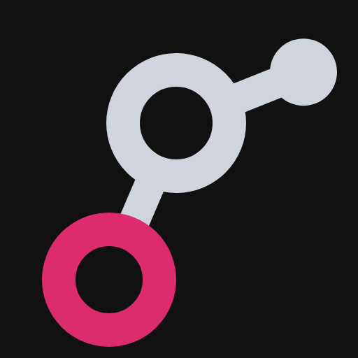
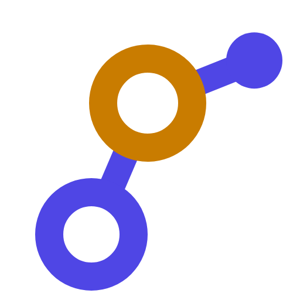
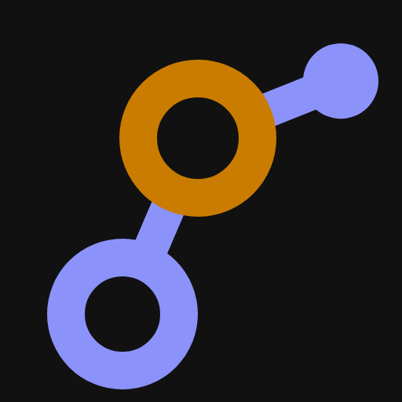
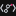
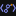

graphty logo, round 5
Every option has a label (N1, A1+3b, S3a, K2 and so on): reply with the labels you pick. Each image sits on its own white or near-black (#111111) tile, whatever this page's theme. Small renders are real 16 px and 64 px PNGs; "x4" tiles are the 16 px PNG blown up with hard pixels so you can see exactly what a favicon shows.
The team's recommendations, in one place.
- Wordmark: confirmed V12, Outfit 500 with stylistic set 1 (ss01). It changes two letters of "graphty": the g's tail curls deeper, and the t gets a curved foot. Used everywhere below.
- Which circle carries the color: keep N1, the ear node (today's). N2 (middle ring) is a real alternative: it reads slightly more like a network and its color survives better at 16 px, but it splits the g. Details in section 2.
- Algorithms: A1+3c (a route into the hub, which wears a halo). If 16 px matters most, A1 alone.
- graph-samples: S3a (no dots on either back card).
- Cytoscape co-brand: K1 (plus sign) for docs and the README; K2 (heart) is friendlier but reads as an endorsement, so it needs the Cytoscape maintainers' agreement even more than K1 does.
- Accent: one accent per palette, one hex used on light and dark alike. Drop the separate "text-safe" and "dark-mode" magentas: they are within a few percent of each other, which is why you could not see the difference.
- Palette: graphite + magenta. It is the only one of the three where a single accent value passes on white and on near-black at almost text-grade contrast, and nothing in the graph-visualization field uses it.
1. Wordmark: confirmed Outfit 500 + ss01 (V12)
The third image under "Wordmark: Outfit 500" on round 4's page was V12, the graphite + magenta lockup set in Outfit 500 with stylistic set 1 (ss01) turned on. The first two were V9, plain Outfit, on white and on dark. So yes: Outfit + ss01.
One thing round 4 did not say: ss01 swaps two letters of "graphty", not one. The g keeps its single bowl but its tail drops deeper and curls back up at the end (round 4 called this the looping g; it is not a two-storey g), and the t gets a foot that curves to the right instead of a straight stem. Every other letter is unchanged. Below, plain Outfit on top, ss01 underneath. Every lockup on this page uses the ss01 version.
Package names after "graphty" (layout, graph-io and so on) stay in plain Outfit 400. ss01 would also change their e, n, m and t, which makes long names like "webgpu-graph-algorithms" look decorative; the ss01 letters stay special to the word "graphty". Say so if you want ss01 on the package names too.
2. Which circle carries the color
R1 with the accent on exactly one circle; everything else in the palette's ink. N1 the ear node at top right (today's). N2 the middle ring (the g's bowl). N3 the bottom ring (the g's tail). Each palette on white and on dark, at 512, 64 and 16 px (the 512 px render is shown at 160 px; open it for full size).
graphite + magenta
| light 512 | 64 | 16 | 16 x4 | dark 512 | 64 | 16 | 16 x4 | |
|---|---|---|---|---|---|---|---|---|
| N1 ear node (today) |  |  |  |  |  | |||
| N2 middle ring |  |  |  |  | ||||
| N3 bottom ring |  |  |  |
ink + lime


indigo + amber
| light 512 | 64 | 16 | 16 x4 | dark 512 | 64 | 16 | 16 x4 | |
|---|---|---|---|---|---|---|---|---|
| N1 ear node (today) |  |  |  |  |  | |||
| N2 middle ring |  |  |  |  |  | |||
| N3 bottom ring |  |  |  |  |  |


Team view: keep N1, with N2 as the honest runner-up.
Does N2 or N3 read more like a graph? Yes, somewhat. With a ring in color and the ear node in plain ink, all three circles read as equal nodes and one of them as "selected", which is how graph tools draw a selection. N2 is the strongest of the two: it colors the hub, the node with two edges. N2 and N3 also keep more color at 16 px, because a ring is a bigger area than the small ear node (compare the x4 tiles: N1's accent is a few pixels at the corner).
What they cost the g. The letter is read from its two rings stacked on one stem. Coloring one ring separates it from the other, so the eye reads "a colored ring plus a gray shape" before it reads one letter. In N2 the colored bowl jumps forward and the g's tail falls back; in N3 the color pulls the eye to the bottom, the mark gets bottom-heavy, and the top half reads like a "9" or a key. The ear node, now plain ink, also stops looking special, so the mark loses its one clear "this end is a node" cue.
Why N1 still wins. The color sits on the one part that is only a node and not part of the letter, so the g stays whole and the color still says "graph". Every child brand lights up the same spot (layout's handles, the algorithms route start there), so the family stays consistent. If the 16 px favicon is your top priority, N2 is the one to choose: it keeps the g readable and gives the favicon a real patch of color.
3. algorithms: A1, A3 and three combinations
Each row: on graphite + magenta at 128 px (white, dark), then 64 px in all three palettes on white and on dark, then the real 16 px renders, then 16 px at x4.
A1Shortest path traced
Round 4's A1: a thin accent route from the ear node through the bowl's centre to the loop's centre, with a stop at each node.
A3Centrality hub
Round 4's A3: the bowl, the node that joins the other two, wears an accent halo broken where its edges leave.
A1+3aRoute and hub, both whole
A1 and A3 together: the traced route with its stops, and the halo on the bowl. The most literal; the busiest at 16 px.


A1+3bHub found, no route
A3's halo plus A1's stop inside the bowl only: the node the algorithm picked out, ringed and filled. No route line, so the g stays clean.
A1+3cRoute into the hub
A1's route from the ear node ends at the bowl's centre, which wears A3's halo: a search that reached the central node. One line, one stop, one halo.
Team pick: A1+3c. It carries both ideas you liked: A1's route (a search starting at the ear node) and A3's halo (the node it found), with one stop instead of two, so the g is less busy than A1+3a. At 16 px the route line is still the clearest accent shape, and it is what tells algorithms apart from the parent g. A1 alone is the most legible at 16 px of all five and the right choice if the favicon matters most. A3 and A1+3b lose their halo to a pink smear around the bowl at 16 px, and A1+3b's filled bowl reads like an eye or a target at 64 px.
4. graph-samples: S3 without the back-card dots
S3Round 4's S3, for reference
Each back card shows an accent dot in its top-right corner.
S3aS3, no back-card dots
As asked: S3 with the dots removed from both back cards. The only accent left is the g's own node.


S3bS3, rearmost dot removed
In case you meant only the card at the very back: the middle card keeps its dot.
Team pick: S3a. With both dots gone the only accent is the g's own node, like every other child. S3b keeps one dot, which reads as a stray mark rather than "another graph" once its twin is gone.
5. Cytoscape co-brand: plus sign or heart
K1 graphty mark, plus sign, Cytoscape.js logo, then "graphty cytoscape-extensions". K2 the same with a heart. Optical sizing: the Cytoscape.js logo is a filled square, which looks bigger than the open g at the same height, so it is set at about 90% of the g's height and centred on the g's visual centre, not its box. The plus is in ink; the heart is in the accent, so it reads as a heart and not a bullet. The gaps on both sides of the joiner are equal, and the words start after a wider gap so the two logos read as one unit.
Permission. The Cytoscape.js logo belongs to the Cytoscape.js project; it is used here only as a placeholder. Putting it in our package's branding needs its maintainers' agreement. The owner's standing rule is that we never post on Cytoscape repositories (no issues, comments or pull requests), so asking would have to be by private email to the maintainers, by you, or the co-brand ships with the words only ("graphty cytoscape-extensions" next to the graphty mark, which needs no permission). K2's heart implies a relationship between the projects, so it needs that agreement even more than K1.
K1graphty + Cytoscape.js
Logos only, and the full lockup as rendered 32 px high:
K2graphty loves Cytoscape.js
Logos only, and the full lockup as rendered 32 px high:
At 16 px (favicon, npm avatar) there is no room for two logos: use the plain graphty g.
6. The full kit, one sheet per palette
Parent mark, wordmark lockup, then every child. algorithms shows all five options; graph-samples shows S3a and S3b. Marks at 64 px with the real 16 px render beside them. Lockups as vector, one per package, with the recommended algorithms (A1+3c) and graph-samples (S3a) options.
Sheet: graphite + magenta





Sheet: ink + lime


Sheet: indigo + amber





7. Accent colors: one per palette
Best practice. A brand defines one accent hue and one logo value of it. Tonal steps (a darker shade for text on white, a lighter one on dark) belong to the product's UI color scale, not to the logo, and only exist where accessibility forces them. Large design systems work this way: Material 3 derives a tonal palette from one key color, Radix and Tailwind ship 11 to 12 step scales of each hue for UI, and brand guidelines typically give the logo one accent value, with a separate light/dark version only for the parts that must invert (here, the ink of the rings). WCAG 2.2 exempts logos from its contrast rules (SC 1.4.3 "logotypes"), but we still hold the mark to the non-text 3:1 of SC 1.4.11 so the node stays visible as a favicon on any tab color, and hold accent text to 4.5:1 (SC 1.4.3, normal text) or 3:1 for large text.
A fact that settles the magenta question. No single color can reach 4.5:1 on both white and #111111: the most any color manages on both at once is 4.35:1. So a "one value for everything" accent can only be text-safe on one side. Round 4's three magentas were three attempts to sit on that knife edge, and they land within 0.2 contrast of each other, which is why they look identical. For graphics (the logo node, icons, focus rings, chart marks) one value is enough on both backgrounds in every palette.
| palette | keep: the one accent | on white | on #111111 | verdict | drop |
|---|---|---|---|---|---|
| graphite + magenta | #dd2c6d | graphics 4.51:1 pass text 4.51:1 pass | graphics 4.19:1 pass text 4.19:1 fail | One value does everything except small body text on dark (4.2:1 there; fine for large text, icons, links with an underline). If dark-mode body text in accent is ever needed, add #ec3f7e (5.0:1) then, as a UI token, not a logo color. | #e0306f, #ec3f7e (as logo colors) |
| ink + lime | #6f9c00 | graphics 3.27:1 pass text 3.27:1 fail | graphics 5.78:1 pass text 5.78:1 pass | One value works for the logo and every graphic on both backgrounds. Lime cannot be text on white without turning olive: accent text on white needs #588300 (4.5:1), a visibly different, browner color. On dark, a single lime is noticeably duller than round 4's neon #c4f23a. | #75a300 (3.0:1 exactly, no margin), #c4f23a (1.3:1 on white) |
| indigo + amber | #c97c00 | graphics 3.3:1 pass text 3.3:1 fail | graphics 5.72:1 pass text 5.72:1 pass | One value works for the logo and graphics on both backgrounds. Accent text on white needs #b36200 (4.5:1), which reads brown rather than amber. | #d48200 (3.0:1 exactly), #ffb81f (1.7:1 on white) |
Ring ink, which must invert between light and dark (unchanged from round 4):
| palette | ink on white | ink on #111111 | wordmark on white / on dark |
|---|---|---|---|
| graphite + magenta | #2e323c 12.82:1 | #d0d4dc 12.71:1 | #1c1d22 / #f2f2f4 |
| ink + lime | #2a3045 13.07:1 | #9aa3b8 7.47:1 | #14161f / #f2f3f7 |
| indigo + amber | #4f46e5 6.29:1 | #8b93fa 6.88:1 | #1b1b2b / #f2f2f7 |
Team recommendation: one accent. graphite + magenta keeps #dd2c6d only (4.5:1 on white, 4.2:1 on #111111). It is round 4's "text-safe" magenta, the same color to the eye as #e0306f, chosen because it passes text contrast on white for free. Every PNG and SVG on this page already uses one accent per palette on both light and dark.
8. The three palettes: pros and cons
The field: Cytoscape (desktop) is orange, and Cytoscape.js's logo is JavaScript yellow; Neo4j is a bright blue with teal; Graphistry is teal; D3 is orange; Gephi is gray with a rainbow; NetworkX is blue. Warm orange-yellow and blue-teal are the crowded corners.
#dd2c6d graphite + magenta
For. Nobody in graph visualization owns magenta, so it is the most distinct of the three. One accent value works on white and dark at nearly text-grade contrast. Graphite is neutral, so the mark sits on any docs theme or slide, and the rings never compete with the user's own graph colors. Against Cytoscape.js yellow in the co-brand it is clearly a second brand.
Against. Magenta is a strong, slightly loud color: used for big fills it can feel consumer or fashion rather than engineering, so keep it to the node and small accents. It sits close to T-Mobile magenta (no conflict in this field). For red-green color-blind readers it loses some saturation, but the node still separates from the graphite rings by lightness.
#6f9c00 ink + lime
For. Energetic and technical; lime on dark ink looks like a terminal and suits the WebGPU and performance story. Distinct from Neo4j, Graphistry, D3 and Cytoscape.
Against. Lime cannot be text on white (it becomes olive #588300), and a single lime that passes on white looks dull on dark. It is very close to NVIDIA green (#76b900): with a WebGPU package in the family, readers may assume an NVIDIA tie. For red-green color-blind readers lime and dark ink separate only by lightness.
#c97c00 indigo + amber
For. Blue and amber is the safest pair for color-blind readers (it lies on the axis they still see). Indigo rings give the mark the most color at large sizes.
Against. The most crowded: amber sits next to Cytoscape orange, Cytoscape.js yellow and D3 orange, and in the co-brand graphty's amber node and the yellow Cytoscape.js square blur into one warm brand. Indigo #4f46e5 is exactly Tailwind's default indigo-600, the most common "generic SaaS" color of recent years. Indigo rings are colored ink, so the mark always shows two hues and has no neutral version except one-color.
What is left for you
- Circle coloring: N1 (recommended), N2 or N3.
- algorithms: A1, A3, A1+3a, A1+3b or A1+3c (recommended).
- graph-samples: S3a (recommended) or S3b.
- Cytoscape co-brand: K1 (plus) or K2 (heart), and whether to email the Cytoscape.js maintainers for permission to use their logo (or ship the co-brand with the words only).
- Palette: graphite + magenta (recommended), ink + lime or indigo + amber.
- Accent: one value per palette (recommended), or keep a separate dark-mode step.
- ss01 on the package names too, or only on "graphty" (recommended).